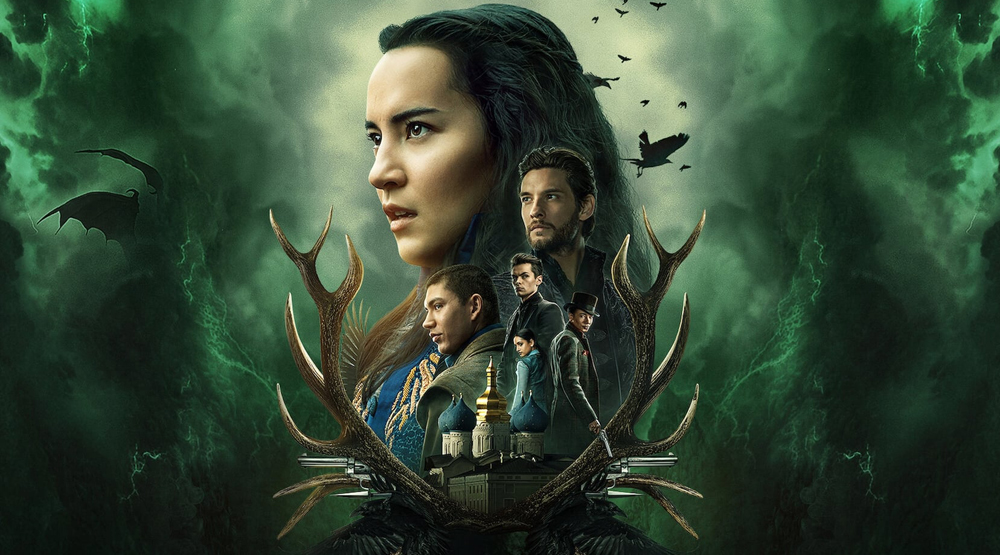
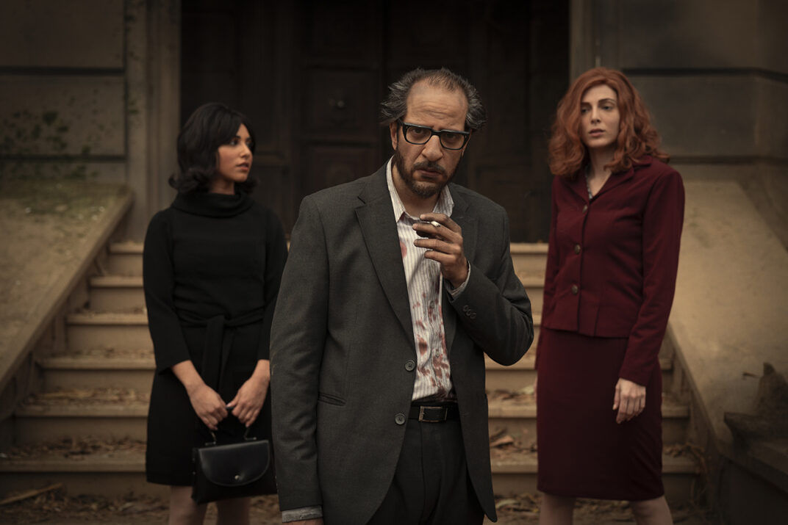

5 классных фэнтези-сериалов Netflix, от которых невозможно оторваться
15 января 2022Один из способов отвлечься и поверить в сказку – посмотреть фэнтези. От взрывающего рейтинги “Ведьмака” до многосезонной и откровенной “Чужестранки”, рассказываем о лучших фэнтези-сериалах на Netflix.
Ведьмак
“Ведьмак” стал настоящей сенсацией, а выход второго сезона спровоцировал восторг и лидирующие позиции в рейтинге. На Netflix даже создали отдельный раздел, посвященный исключительной вселенной сериала. Обойдемся без спойлеров. Геральт из Ривии (в исполнении Генри Кавилла ) продолжает бороться со злом, принцесса Цирилла становится сильнее и храбрее, а Лютик – рифмует вдумчивые строки.
Проклятая
Этот сериал почти незаметно вышел на Netflix в 2020 году. Сюжет разворачивается вокруг молодой девушки Нимуэ, которая после смерти матери обнаруживает в себе странные магические способности и отправляется на поиски ответов. Девушка сталкивается с жестокими препятствиями и находит сторонников.
Тень и кость
Первый сезон сериала вышел год назад и теперь мы с нетерпением ждем его продолжения. Сериал основан на романах американской писательницы Ли Бардуго, в которых описана страна Равка, разделенная тьмой. Опасным существам, обитающим в тьме, могут противостоять только гриши – маги, одной из которых оказывается Алина, обладающая сильным даром, способным победить зло. И в этом ей беспрестанно помогает друг детства Мал.
Паранормальные явления
Возможно, вы удивитесь, но этот фэнтези-сериал создан в Египте и благодаря пересечению мистики с реальностью он точно заслуживает внимания. Гематолог Рефат сталкивается с рядом подозрительных событий, которые побуждают его заняться расследованием паранормальных явлений. Во многом этот сериал напоминает ужасы. Из-за пробирающих до мурашек эпизодов и музыки. Поэтому будьте осторожны и смотрите сериал в компании (или днем).
Чужестранка
Пять сезонов “Чужестранки” посвящены особенностям путешествия во времени, отношениям главных героев и, конечно, атмосферной картинке, которая точно делает сериал особенным. Эта фэнтези-история является адаптацией романов Дианы Гэблдон. Обязательно посмотрите ее. До “Ведьмака” или после.